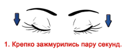
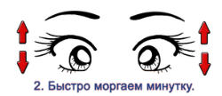
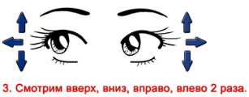
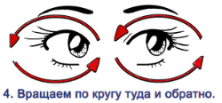
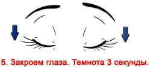
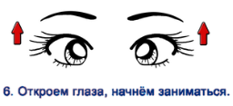

Человек видит не столько глазами, сколько мозгом. Мы видим окружающий мир потому, что изображение, возникшее на сетчатке глаза, проходит сложную "математическую" обработку в мозге.
В ходе этой обработки изображение переворачивается на 180° (вспомните выпуклую линзу-хрусталик), в нем устраняются все геометрические искажения. Изображение на экране дисплея также искажено, и прежде всего кривизной поверхности экрана. Однако это искажение мы практически не замечаем, поскольку и здесь включается в работу мозг, корректируя изображение. Попытка сфокусировать то, что не фокусируется, и устранить искажения, характер которых непредсказуем, приводит к сильной перегрузке отдельных участков головного мозга при относительной не загруженности других. Последствия могут быть серьезными, вплоть до расстройства вегетативной нервной системы, нарушения мозгового кровообращения. Особенно опасно это для людей, страдающих сосудистыми заболеваниями. На сами глаза тоже ложится большая нагрузка. Мышцы, меняющие геометрию хрусталика, постоянно сокращаются, пытаясь устранить нерезкость. Дополнительную нагрузку на зрение дает визуально незаметное мерцание экрана с частотой кадровой развертки. Экран дисплея светится с интенсивностью осветительного прибора. Диапазон яркостей между изображением на экране и предметами окружающей обстановки зачастую превышает тот диапазон, на который рассчитан глаз человека. Это вызывает сильную усталость глазных мышц и локальные нарушения кровообращения. К перенапряжению глаз приводит и неправильное освещение, неудачно выбранное место для компьютера и продолжительная работа без перерывов.Устранив эти причины, можно свести к минимуму вред от технического несовершенства мониторов с электронно-лучевыми трубками.
Комплексы упражнений для глаз:
Лёгкая разминка. Потрите ладони друг об друга и положите их на закрытые веки, подержав так полминуты. Важно, чтобы руки были тёплыми, это улучшит кровообращение. После упражнения слегка надавливайте на веки 20–30 раз через равные промежутки времени. Частое моргание. Частое и быстрое зажмуривание глаз на протяжении минуты позволит снять напряжение, восстановить чёткость зрения и даже избавиться от головной боли. Косые глазки. Регулярно скашивайте глаза и смотрите на кончик носа, повторять такое действие следует около 20 раз. После упражнения легко надавите тёплыми ладонями на веки для закрепления эффекта. Взгляд вдаль. Наклейте на окно небольшой листочек яркой бумаги и отойдите примерно на 50 сантиметров. Попеременно смотрите на яркую точку, закреплённую на окне, и вдаль, на горизонт. Это упражнение помогает взгляду лучше фокусироваться, делает зрение более чётким. Ещё несколько упражнений в виде изображений:      